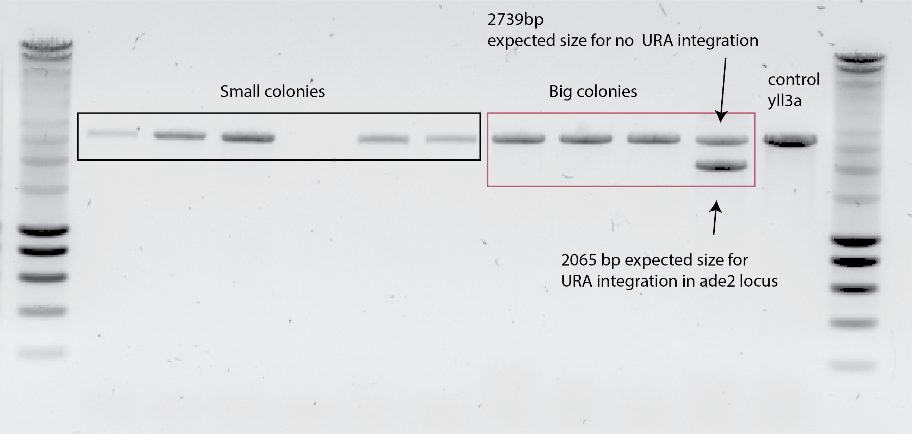

1. Title: URA transformation in ADE2 locus¶
1.1. Date¶
20052019
1.2. Method¶
Yeast transformation protocol
1.2.1. Homology arms:¶
left homology arm: 215 bp
right homology arm: 439bp
No overlap with other sequences on the S. cerevisae genome Result of blasting
2,5ng of the PCR product was used for it.
OD starting colony : 3
1.3. Results¶
The negative control, did not grow :) on the selection plate (-URA). The negative control is yll3a with any insert on the mixture.
I have more than 100 transformants colonies growing on -URA. However, after 5 days of incubation none of them turned pink, as expected if they dont produce ADE2 gene :( :( .
High variability in colony sizes, indicating different genetic backgrounds (:( 🤔)
1.3.1. Colony PCR¶

1.4. Conclusions¶
The small colonies that grew on -URA has the same band size as the control strain yll3a, meaning, that they didnt insert the URA gene + promoter on the ADE2 locus.
One big colony show two bands, one in the control size and the other one in the correct size, if the URA gene is integrated in ADE2 locus. This is puzzling.
1.4.1. Things we dont understand 🤔:¶
Where does the URA gene was inserted during transformation? Since the homology arms of the ADE2 we are using has no overlap anywhere else in the genome there is no way the URA gene, in between the homology arms, can be inserted some where else. The bands at the same heigh as the control indicates the ADE2 is intacted,as the yll3a.
Why there is one colony showing the right and the wrong band at the same time? This means that the URA gene + promotor was inserted in the ADE2 locus, replacing it , and at the same time not replacing it ???
1.4.2. Next experiments 🕵️¶
Replica plating on -ade2 plates to see if they have the ADE2 intact or not.
Yes, they do, all of the colonies did grow on -ade2 plates. :(
Sequencing the ADE2 gene of yll3a, to see if the ADE2 we are taking from SGD is indeed the same sequence as the one we have in yll3a.
Yes, it seems so :) 👉 Result File